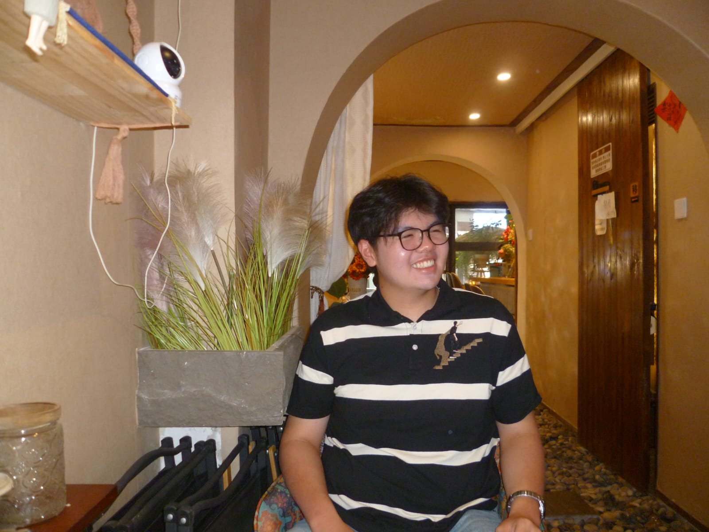

CEO
Christian Nathan Prbadi
Hi, I’m Christian Nathan Pribadi. I’m a 19-year-old student currently studying at the Beijing Institute of Technology, having moved to China after spending my entire life growing up in Jakarta, Indonesia. Adjusting to life abroad, navigating a new culture, and tackling a rigorous university education is an incredible journey on its own, but my passion for technology and digital innovation goes far beyond the daily routine of the classroom.
Alongside my academic pursuits, I serve as the CEO of Cutiepy Industries. Right now, our entire team is fully focused on building an interactive, highly accessible, and comprehensive web platform specifically designed to teach people how to code in Python. We want to break down the traditional barriers to entry in programming, making it simple, intuitive, and truly engaging for beginners to master computer science fundamentals regardless of their prior background. I am deeply looking forward to developing and officially launching this website alongside my crewmates. It is an absolute pleasure working with such a talented, driven group of individuals, and leading this effort as CEO is both a privilege and an inspiring experience. Watching our initial ideas transform into a fully functional product through our shared hard work is incredibly rewarding, and I cannot wait to see the positive impact our platform will have on aspiring developers worldwide.